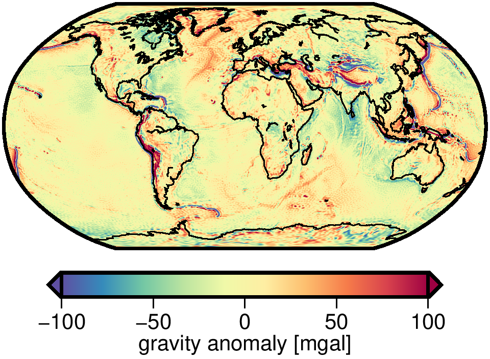

The Gravity Recovery Object Oriented Programming System (GROOPS) is a software toolkit for tasks like gravity field recovery, GNSS constellation and ground station processing, and satellite orbit determination.
The source code is GPL v3 licensed and available on GitHub.
Applications |
Software Overview |
|---|---|

|
Navigating the PICO: Use arrow keys or swipe to changes the slide. Pressing ESC shows an overview of all slides.
Applications
| Gravity Field Recovery | GNSS Processing |
| Kinematic Orbit Determination | Data Analysis |
Gravity Field Recovery
GROOPS has been extensively used for global and local gravity field recovery. Examples of gravity data sets produced by GROOPS include:
| GOCO06s | ITSG-Grace2018 | Lunar Gravity Field |
Regional Geoid |
|  |

|
GOCO06s
ITSG-Grace2018
Lunar Gravity Field
Regional Geoid
GNSS Processing
Satellite Orbits and Clocks
GROOPS is capable of handling multi-GNSS constellations and can produce satellite data products like precise orbits, clocks, attitude and signal biases.
|
|
|
A guide on how to compute GNSS constellations can be found in the Cookbook.
Ground Station Networks
Next to GNSS constellations, GROOPS can compute large station networks to estimate station positions, station signal biases, clocks and troposphere parameters.
|
|
|
Precise Point Positioning
Kinematic Orbit Determination
GROOPS can be used to estimate high-quality kinematic orbits of low-Earth orbit (LEO) satellites from GNSS observations using the raw observation approach (Zehentner and Mayer-Gürr 2015). Kinematic orbits produced with GROOPS are, for example, used by the ESA SWARM DISC and the GOCO consortium for gravity field recovery.
Like most features of GROOPS, kinematic orbit processing is data agnostic, that is, once the required data and meta data is compiled, the processing steps are independent of the satellite mission. So far kinematic orbits for 19 satellites including dedicated gravity missions like GRACE, GRACE-FO, CHAMP and GOCE but also other LEO satellites like Jason-1/2/3, MetOp-A, Sentinel-1A/B, Sentinel-3A/B, Swarm-1/2/3, TanDEM-X, TerraSAR-X have been computed.
A step-by-step tutorial on how kinematic orbit determination works in GROOPS can be found in the cookbook.
Estimation of Antenna Center Variations
Antenna center variations (ACV) are a key criteria for high-quality kinematic orbits. GROOPS has the capability to estimate time-variable ACVs for both code and phase observations.
|
|
|
Data Pre- and Post-processing
GROOPS is able to perform general data pre- and post-processing like outlier detection, resampling, detrending, and filtering of time series and spatial data. Additionally, GROOPS offers statistical analysis, and spectral analysis in Fourier or wavelet domain.
Data sets can be transformed and visualized in different domains. Satellite observations, for example, can be mapped to the satellite ground track which potentially reveals geographically correlated features.
A short example of data pre- and post-processing can be found in the cookbook.
Time Series Analysis
GROOPS supports various methods for the analysis of observation and model time series. These include spectral methods like wavelet decomposition or Fourier transformation or the computation of different sample statistics. Time series data can also be co-located with, for example, a satellite orbit to transform between different spatial representations and time domain.
|
|
|
|
Spatial Statistics
Similar as in time domain, GROOPS can analyize spatial or spatio-temporal data sets. In the example shown here we gauge the noise in different GRACE solutions by computing the RMS in quiet ocean regions.

|
|
Data Visualization
Data visualization is realized through the Generic Mapping Tools (GMT, Wessel et al. 2019). GMT is not included in the source code, GROOPS rather generates shell or batch scripts which can be passed to the GMT executable.
Figures are composed via different layers which can be created and rearranged in the GUI. This makes is easy to generate publication-quality figures.
Software Overview
GROOPS is written in C++, with the Source Code and Documentation hosted on GitHub.
User interaction with GROOPS is based on configuration files typically generated in the GUI.
A configuration file represents a sequence of smaller tasks dubbed
Graphical User Interface (GUI)
The GROOPS GUI offers a convenient way for generating, managing and running configuration files.
Portability
GROOPS can be installed and run on all major platforms: Linux, Windows and MacOS
Installation guides for Windows and Linux are available on GitHub.
GROOPS can be installed on headless systems and has been run on multiple supercomputers of the PRACE association.
Dependencies
While GROOPS is intended to be a standalone software package, some functionality depends on external libraries. Hard dependencies are:
- Expat XML parser
- IERS Software Collection
- BLAS/LAPACK
Additional libraries extend the feature set of GROOPS:
- NetCDF and zlib: for reading and writing NetCDF and compressed files
- ERFA: for high-precision Earth rotation
Parallel execution is realized throught the Message Passing Interface (MPI, Standard 3.0 or higher). Most GROOPS programs are implemented with parallelization in mind. If an MPI implementation is present, the software can make use of mulitple cores on a single system, or run on a distributed high-performance computing cluster.
The generic mapping tools (GMT) are used for data visualization.
References
Kvas, A., Brockmann, J. M., Krauss, S., Schubert, T., Gruber, T., Meyer, U., Mayer-Gürr, T., Schuh, W.-D., Jäggi, A., and Pail, R.: GOCO06s – a satellite-only global gravity field model, Earth Syst. Sci. Data, 13, 99–118, https://doi.org/10.5194/essd-13-99-2021, 2021.
Kvas, A., Behzadpour, S., Ellmer, M., Klinger, B., Strasser, S., Zehentner, N., & Mayer‐Gürr, T. (2019). ITSG‐Grace2018: Overview and evaluation of a new GRACE‐only gravity field time series. Journal of Geophysical Research: Solid Earth, 124, 9332– 9344. https://doi.org/10.1029/2019JB017415
Mayer-Gürr, Torsten; Behzadpur, Saniya; Ellmer, Matthias; Kvas, Andreas; Klinger, Beate; Strasser, Sebastian; Zehentner, Norbert (2018): ITSG-Grace2018 - Monthly, Daily and Static Gravity Field Solutions from GRACE. GFZ Data Services. https://doi.org/10.5880/ICGEM.2018.003
Wirnsberger, H., Krauss, S., & Mayer-Gürr, T. (2019). First independent Graz Lunar Gravity Model derived from GRAIL. Icarus, 317, 324–336. https://doi.org/https://doi.org/10.1016/j.icarus.2018.08.011
Pock, C., Mayer-Guerr, T., & Kuehtreiber, N. (2014). Consistent combination of satellite and terrestrial gravity field observations in regional geoid modeling: A case study for Austria. In U. Marti (Ed.), International Association of Geodesy Symposia (Vol. 141, pp. 151–156). Springer International Publishing. https://doi.org/10.1007/978-3-319-10837-7_19
Zehentner, N., Mayer-Gürr, T. Precise orbit determination based on raw GPS measurements. J Geod 90, 275–286 (2016). https://doi.org/10.1007/s00190-015-0872-7
Strasser, S., Mayer-Gürr, T. & Zehentner, N. Processing of GNSS constellations and ground station networks using the raw observation approach. J Geod 93, 1045–1057 (2019). https://doi.org/10.1007/s00190-018-1223-2
Wessel, P., Luis, J. F., Uieda, L., Scharroo, R., Wobbe, F., Smith, W. H. F., & Tian, D. (2019). The Generic Mapping Tools version 6. Geochemistry, Geophysics, Geosystems, 20, 5556– 5564. https://doi.org/10.1029/2019GC008515